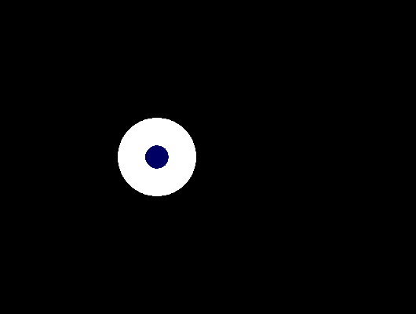
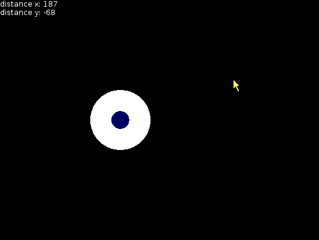
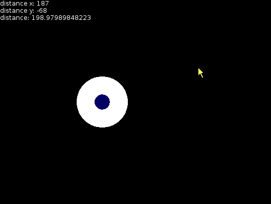
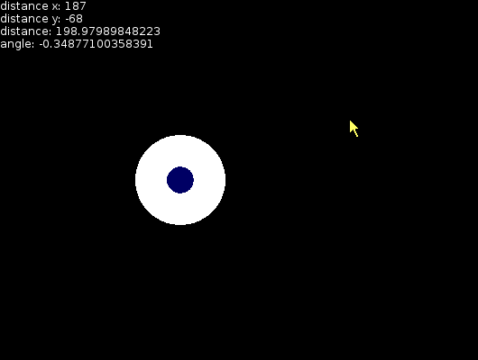
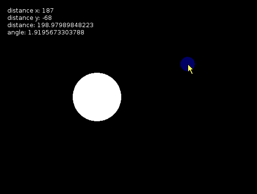
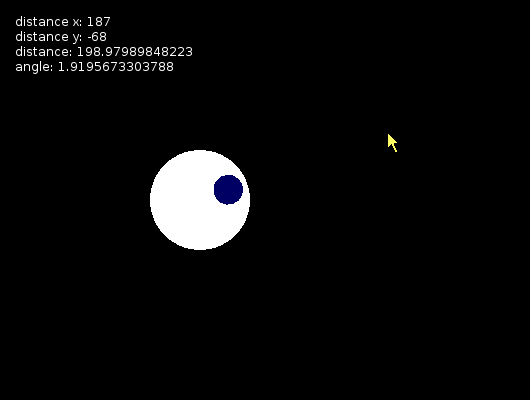
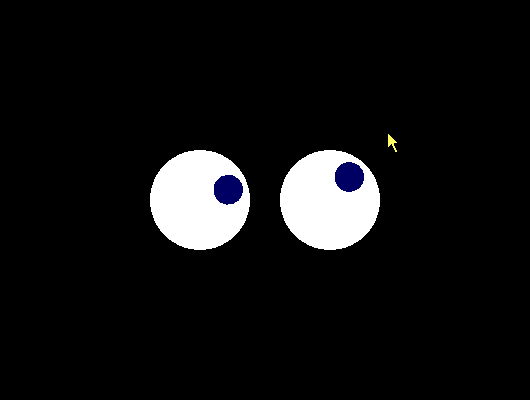

The eyes follow the cursor.

The eye is drawn with a white circle and a smaller dark blue circle for the pupil.
function love.draw() love.graphics.setColor(255, 255, 255) love.graphics.circle('fill', 200, 200, 50) love.graphics.setColor(0, 0, 100) love.graphics.circle('fill', 200, 200, 15) end
The distance between the center of the eye and the mouse cursor is displayed.
The X and Y position of the eye is reused from drawing the eye, so variables are made for these.
function love.draw() local eyeX = 200 local eyeY = 200 local distanceX = love.mouse.getX() - eyeX local distanceY = love.mouse.getY() - eyeY local output = {} table.insert(output, 'distance x: '..distanceX) table.insert(output, 'distance y: '..distanceY) love.graphics.setColor(255, 255, 255) love.graphics.print(output, table.concat(output, '\n')) love.graphics.setColor(255, 255, 255) love.graphics.circle('fill', eyeX, eyeY, 50) love.graphics.setColor(0, 0, 100) love.graphics.circle('fill', 200, 200, 15) end
The distance in a straight-line is calculated using the Pythagorean theorem.
The square root of the distance on the X axis squared plus the distance on the Y axis squared is the distance in a straight line.
function love.draw() local distanceX = love.mouse.getX() - eyeX local distanceY = love.mouse.getY() - eyeY -- etc. table.insert(output, 'distance: '..distance) -- etc. end
The angle in radians between the mouse cursor and the center of the eye is calculated using math.atan2.
function love.draw() -- etc. local angle = math.atan2(distanceY, distanceX) -- etc. table.insert(output, 'angle: '..angle) -- etc. end
The cosine/sine of the X/Y positions give the ratio between the X/Y positions and the straight-line distance.
For example, when the mouse is directly below the eye, all of the straight-line distance goes into the Y axis, so the cosine is 0 and the sine is 1.
For another example, when the sine is 0.5, the Y distance is 0.5 (i.e. half) of the straight-line distance, and the X distance is around 0.86 of the straight-line distance.
The pupil is moved by the cosine/sine of the angle multiplied by the distance, which brings the pupil to the mouse position.
function love.draw() -- etc. local pupilX = eyeX + (math.cos(angle) * distance) local pupilY = eyeY + (math.sin(angle) * distance) -- etc. table.insert(output, 'cos(angle): '..math.cos(angle)) table.insert(output, 'sin(angle): '..math.sin(angle)) -- etc. love.graphics.setColor(0, 0, 100) love.graphics.circle('fill', pupilX, pupilY) end
The straight-line distance is limited to a certain number so that it can't move outside of the eye.
function love.draw() -- etc. local eyeMaxPupilDistance = 30 if distance > eyeMaxPupilDistance then distance = eyeMaxPupilDistance end local pupilX = eyeX + (math.cos(angle) * distance) local pupilY = eyeY + (math.sin(angle) * distance) -- etc. end
The code is made into a function which takes an eye's X and Y positions.
function love.draw() function drawEye(eyeX, eyeY) local distanceX = love.mouse.getX() - eyeX local distanceY = love.mouse.getY() - eyeY local distance = math.sqrt(distanceX^2 + distanceY^2) local angle = math.atan2(distanceY, distanceX) local eyeMaxPupilDistance = 30 if distance > eyeMaxPupilDistance then distance = eyeMaxPupilDistance end local pupilX = eyeX + (math.cos(angle) * distance) local pupilY = eyeY + (math.sin(angle) * distance) love.graphics.setColor(255, 255, 255) love.graphics.circle('fill', eyeX, eyeY, 50) love.graphics.setColor(0, 0, 100) love.graphics.circle('fill', pupilX, pupilY, 15) end drawEye(200, 200) drawEye(330, 200) end